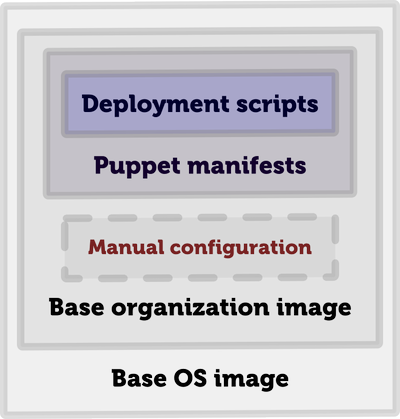

Preparations and installation
Introduction, background, path, reasoning
Demo and try-out of (biased) integration of Gradle + Puppet
Gradle 2.+
VirtualBox 4.3.+
Vagrant 1.7.+
Download Tomcat 8 from apache-tomcat-8.0.18.tar.gz and put it into the repository directory.
Build the petclinic application (gradle clean build) in the application/spring-petclinic directory and place the application/spring-petclinic/build/libs/petclinic-0.1-SNAPSHOT.war archive into the repository directory.
Run vagrant up to start all the virtual machines.
Run gradle initNode to initialize software needed for provisioning (Puppet) to work.
Run gradle puppetapply to apply Puppet configuration to virtual servers.
Download tomcat ~ 4 minutes
spring-petclinic/gradle clean build ~ 3 minutes (+ library download)
vagrant up ~ 15 minutes (- vagrant box)gradle initNode ~ 4 minutesgradle puppetApply ~ 8 minutes
Big projects built by Ant, Maven, and eventually Gradle
Teams composed mostly of Java developers
Complex (sometimes, over-engineered) architectures
Many environments (DEV, TEST, QA, SIT, UAT, PRE-PROD, PROD) to support
Infrastructure is influenced by (relatively) frequent architecture changes (components, versions, layers)
We want our environments to be the same (or at least quite similar) to avoid any side effects during development, testing and production
We don't want to spend hours/days/weeks on configuring each and every new server and keeping them in-sync
Operations guys are not always available (e.g. busy supporting production systems or just not skilled enough)
Development infrastructure (Jenkins, Sonar, Version Control, Load Testing etc.) also needs maintenance
We want to reuse experience available in our team and avoid throwing in too many various trendy technologies that will fail our expectations
How do I connect (ssh) to my server to perform actions required for deployment?
How do I store my configuration for various servers? How do I store secrets?
How do I ensure that remote server has everything on it to run my application?
How do I verify that my automation works (prefferably without breaking anything important)?
DEV << QA <<< PROD
DEV < QA < PROD
DEV ~ QA ~ PROD
DEV = QA = PROD
Keep it in version control
How do I connect to my server?
ant.taskdef(
name: 'scp',
classname: 'o.a.t.a.t.o.ssh.Scp',
classpath: configurations.secureShell.asPath)
ant.taskdef(
name: 'sshexec',
classname: 'o.a.t.a.t.o.ssh.SSHExec',
classpath: configurations.secureShell.asPath)
ant.sshexec(
host: host,
username: user,
password: password,
command: command,
trust: 'true',
failonerror: failOnError)
Next step: wrapper function
def ssh(String command,
Properties props,
boolean failOnError = false,
String suCommandQuoteChar = "'",
String outputProperty = null) {
...
}
Next step: wrapper function
def scp(String file,
String remoteDir,
Properties props) {
...
}
task installFonts << {
forAllServers { props ->
ssh('yes | yum install *font*', props)
}
}
task uninstallNginx << {
forAllServers { props ->
ssh('/etc/init.d/nginx stop', props)
ssh('yes | yum remove nginx', props, true)
ssh('rm -rf /etc/yum.repos.d/nginx.repo', props)
ssh('rm -rf /var/log/nginx', props)
ssh('rm -rf /etc/nginx /var/nginx', props)
}
}
New connection each time
Excplicit repeating parameters
Complex scripts are hard to maintain
Tasks are not idempotent
jsch
sshj
overthere
sshoogr
Groovy-based SSH DSL for:
Remote command execution
File uploading/downloading
Tunneling
@Grab(
group='com.aestasit.infrastructure.sshoogr',
module='sshoogr',
version='0.9.16')
import static com.aestasit.ssh.DefaultSsh.*
defaultUser = 'root'
defaultKeyFile = new File('secret.pem')
execOptions {
verbose = true
showCommand = true
}
Sshoogr usage (connection)
remoteSession {
url = 'user2:654321@localhost:2222'
exec 'rm -rf /tmp/*'
exec 'touch /var/lock/my.pid'
remoteFile('/var/my.conf').text = "enabled=true"
}
Sshoogr usage (multi-line content)
remoteFile('/etc/yum.repos.d/puppet.repo').text = '''
[puppet]
name=Puppet Labs Packages
baseurl=http://yum.puppetlabs.com/el/
enabled=0
gpgcheck=0
'''
Sshoogr usage (file copying)
remoteSession {
scp {
from { localDir "$buildDir/application" }
into { remoteDir '/var/bea/domain/application' }
}
}
Sshoogr usage (command result)
def result = exec(command: '/usr/bin/mycmd',
failOnError: false, showOutput: false)
if (result.exitStatus == 1) {
result.output.eachLine { line ->
if (line.contains('WARNING')) {
throw new RuntimeException("Execution failed with: ${line}")
}
}
}
Sshoogr usage (shortcuts)
if (ok('/usr/bin/mycmd')) {
...
}
if (fail('/usr/bin/othercmd')) {
...
}
tunnel('1.2.3.4', 8080) { int localPort ->
def url = "http://localhost:${localPort}/flushCache"
def result = new URL(url).text
if (result == 'OK') {
println "Cache is flushed!"
} else {
throw new RuntimeException(result)
}
}
Sshoogr usage (prefix/suffix)
prefix('sudo ') {
exec 'rm -rf /var/log/abc.log'
exec 'service abc restart'
}
suffix(' >> output.log') {
exec 'yum -y install nginx'
exec 'yum -y install mc'
exec 'yum -y install links'
}
From scripts to declarations
Deployment vs. Infrastructure management
Sshoogr + Gradle + Puppet
task uploadModules << {
remoteSession {
exec 'rm -rf /tmp/repo.zip'
scp {
from { localFile "${buildDir}/repo.zip" }
into { remoteDir "/root" }
}
...
...
exec 'rm -rf /etc/puppet/modules'
exec 'unzip /tmp/repo.zip -d /etc/puppet/modules'
}
}
task puppetApply(dependsOn: uploadModules) << {
remoteSession {
scp {
from { localFile "${buildDir}/setup.pp" }
into { remoteDir "/tmp" }
}
exec 'puppet apply /tmp/setup.pp'
}
}
Separated infrastructure state description and operations tasks
Scripts became more maintainable and idempotent
How do I store my configuration?
What to do if environment has more than 1 server?
Puppet module repositories
Puppet forge
Pulp
GitHub
Maven as a repository
Puppet module tool
Puppet librarian
r10k
Puppet Module Installer
Configuration code coverage

Happy infrastructure management!